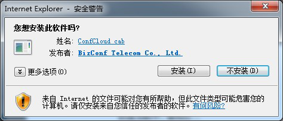
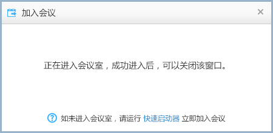
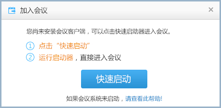
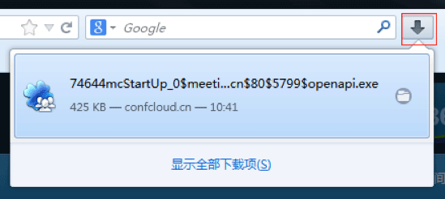
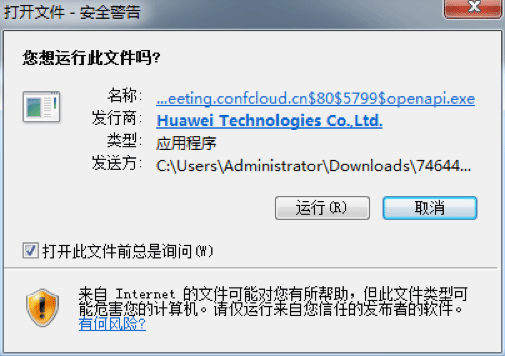
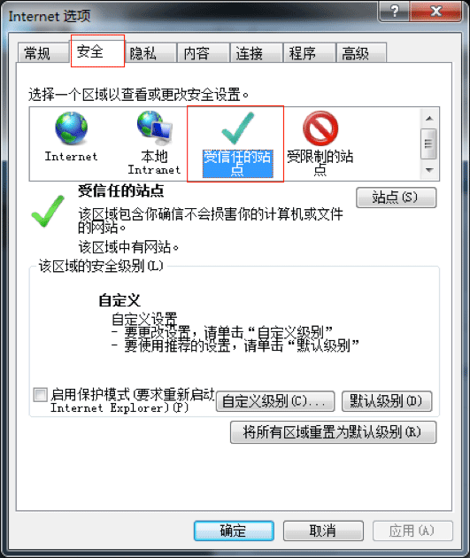
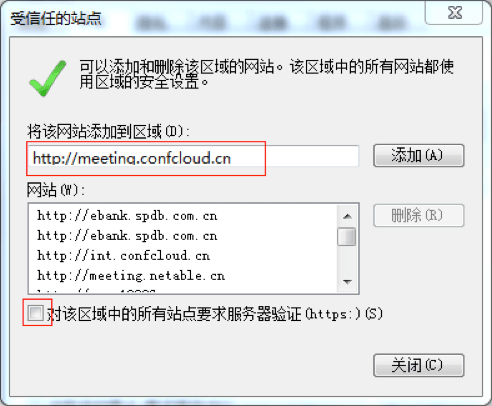
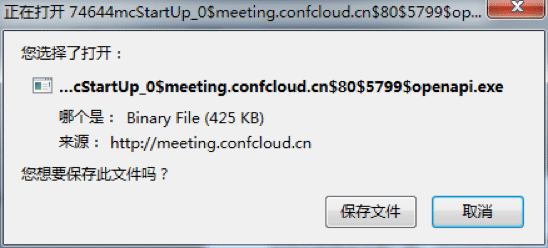

您可以通过会议列表点击加入会议按钮，进入到会议中。
1. 选择公开会议或我的会议，显示与您相关的会议列表。
2. 点击 加入会议 按钮。

参见 会议号码加入
1. 打开您的会议邮件通知

2. 点击“点击加入”链接。
您可以通过会议列表点击加入会议按钮，进入到会议中。
1. 选择公开会议或我的会议，显示与您相关的会议列表。
2. 点击 加入会议 按钮。
参见 会议号码加入
1. 打开您的会议邮件通知
2. 点击“点击加入”链接。
1. 第一次通过IE加入会议，会弹出黄色插件提示，以IE9为例，如图：

2. 点击“安装”，弹出插件安装界面
3. 点击“安装”，进行插件安装，弹出提示界面。
4. 插件安装成功后，系统会弹出检测更新下载界面。
5. 更新完毕，即可加入会议室。
如果您IE浏览器禁止安装插件或安全系数调至较高级别，会影响插件的安装，您可以选择“快速启运器”加入会议。
IE版本不同，黄色插件提示消息栏位置不同，一般在窗口的头部或底部位置。而且不同版本提示的文字可能不一致。您可以点击允许、安装、 运行等操作即可。
1. 以火狐为例，点击“快速启动”。
2. 弹出保存启动程序。

3. 点击“保存文件”。保存完后，可以浏览器右上角处查找文件。
4. 点击“启动程序”，弹出运行界面。
5. 点击“运行”后，系统会弹出检测更新下载界面。
6. 更新完毕，即可加入会议室。
浏览器的版本不同，提示的文字可能不一致。您可以点击允许、安装、 运行等操作即可。
1. 以IE9为例，点击IE设置选项。

2. 弹出Internet选项界面，点击“安全”标签。在安全设置栏中点击“受信任的站点”。
3. 点击“站点(S)”，弹出增加信任站点界面。
4. 将会议管理平台的地址填写在区域中。（地址格式为：http://标识.confcloud.cn），点击“添加(A)”。
5. 不勾选对该区域中的所有站点要求服务器验证（https:）(S)。
6. 点击“关闭(C)”。再点击确定操作。
7. 再次进入会议即可以看到黄色插件提示消息栏。
1. 以火狐为例，点击“快速启动”。
2. 弹出保存启动程序。
3. 点击“保存文件”。保存完后，可以浏览器右上角处查找文件。
4. 点击“启动程序”，弹出运行界面。

5. 点击“运行”后，系统会弹出检测更新下载界面。
1. 可以通过有线网络进行接入，保证网络的稳定持续性。
2. 以360为例，在安装启动程序时，将其暂时保护15分钟。